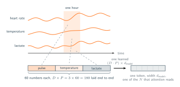
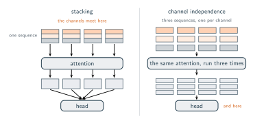

04 · Attention Over Time
Many Channels, One Clock
How to deal with several variables measured at once.
The matrix in section 01 put all three signals into the same row, so minute 300 arrived as $[78,\, 37.2,\, 2.4]$ which consists of one row, three columns, the three channels bound together in a single object. Section 03 then defined a patch as sixty consecutive numbers taken from one signal, which is the opposite arrangement. Both strategies are different so let's now understand how we can in a certain way join them.
Write the two down and the difference shows up in the shapes.
- Stacking. One patch covers all three signals at once, that is sixty minutes of pulse, sixty of temperature and sixty of lactate, $3 \times 60 = 180$ numbers flattened and projected into a single token. The sequence is $N$ tokens long, and every token carries what all three signals were doing during its hour.
- Keeping them apart. Three sequences of $N$ tokens, one per signal, each patch still $P$ numbers wide. Each sequence goes through the same attention with the same weights, and no token ever holds more than one signal.
In general, with $D$ channels, the first arrangement gives one sequence of tokens built from $D \times P$, and the second gives $D$ sequences of tokens built from $P$.
Stacking looks like the better of the two, here's the main argument. The patient is one system, not three. A pulse climbing while the temperature climbs and the lactate climbs is the sort of joint movement a clinician reads as deterioration, and no one of those three signals shows it alone. Under stacking the token for a given hour holds all three windows at once, so the projection can learn a direction that responds to the three of them moving together, and attention can then match that hour against every other hour on exactly that basis. Keep the channels apart and no token can represent the event at all, because no token ever sees more than one signal.

While the logic seems solid, models relying on this approach typically fail due to two main issues. The first is that a single projection now has to serve three different signals. The pulse arrives in beats per minute and lives somewhere between 40 and 180, the temperature in degrees between 35 and 41, the lactate in millimoles per litre between 0.5 and 15. One $180 \times d_{\text{model}}$ matrix has to handle all three at once, and every weight it spends on reading the pulse is a weight it is also using on the lactate. The second is arithmetic about data. Keeping the channels apart hands the same attention three sequences per patient instead of one, so the same weights are trained on three times as many examples, and whatever the model works out about how a signal moves over an hour is learned once and used on all three.
So independence is the usual answer, but treating these signals independently does come with a cost. In a separated setup, a pulse token is never directly compared to a temperature token through a query because the sequences remain isolated within the attention mechanism. The correlated event shown in the previous figure exists within the raw data but is absent from any individual token. If the model needs to utilize this relationship, the three signals must be merged at a different stage, typically within the final output head. This final aggregation is much less precise than the attention mechanism, which is capable of dynamically weighing the hours against one another.
Ultimately, the decision is not about whether the model detects the interaction. The real choice is whether to calculate that interaction within every individual token or to delay the process until the final output stage.
